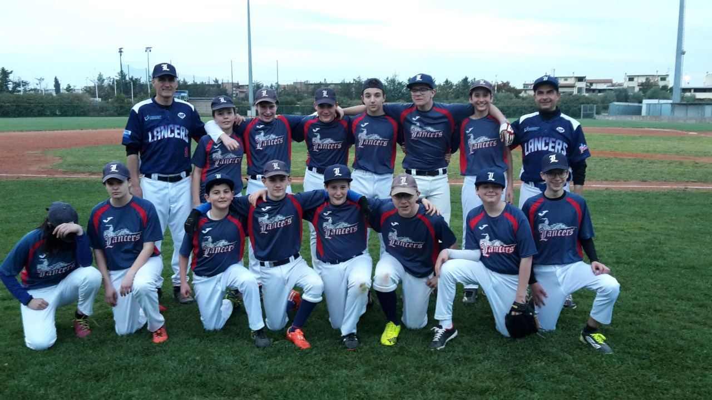

Finalmente si mastica campo e si respira terra rossa.
Finalmente un campionato organizzato per tempo. Finalmente una competizione con regolamenti chiari e con tempistiche di divulgazione perfette!
Insomma… tutto ok.
Bravi anche i nostri ragazzi, che, nonostante le poche occasioni avute per mettere a frutto gli insegnamenti della nuova struttura tecnica, si sono ben comportati in un diamante storicamente ostico per noi.
Si sono viste ottime cose. Cosa? Mha…. finalmente si battucchia; finalmente si corre come pazzi per prendere una palla al volo in foul; finalmente si prova un bunt e un batti e corri.
Finalmente siamo scaltri da approfittare di un errore altrui. E vi pare poco?!?!?!
Poi la dolente nota. Un unico assente. Uno che oggi c’è mancato davvero. Certo, chi è stato chiamato a sostituirlo ce l’ha messa tutta, ne siamo certi. Ma lui è mancato davvero: Francesco Grassi, il nostro prima base. Forse, chissà……non diciamo niente. Speriamo che torni presto e facciamo a Francesco gli auguri di una guarigione velocissima.
E poteva bastare questa nota dolente? Sinceramente sì, eccome se poteva bastare!
Però… pensare che il 25 marzo, con l’ora solare ancora in corso, si potesse giocare una partita di U15 in 2 ore o poco più! Mha! Ci lascia perplessi sinceramente questa decisione della Federazione. Come ci lascia perplessi il fatto di far giocare questa categoria il sabato pomeriggio ben sapendo che alcuni loro tesserati quali atleti frequentano “Scuole Pubbliche Statali” che prevedano lezioni anche di sabato.
E allora, come oggi, assistiamo a genitori che debbono prendere permesso al lavoro per andare a “prelevare” i figli a scuola e subito via verso la destinazione di gara.
Sia chiaro: non è un problema dei soli Lancieri: sarà un problema di tutte le squadre toscane e per tutto il campionato. Per ragioni di studio, non potendo anticipare l’inizio delle gare, ci troveremo molte gare non vedere l’arrivo del settimo inning…..anche con l’imminente ingresso dell’ora legale.
Tutto questo a chi importa? Probabilmente a nessuno. Questa è la dolente nota!
Per la cronaca: la partita è stata sospesa al termine del 4 inning per intervenuta oscurità sul punteggio di 10 a 10.
Probabilmente, non essendo influente per la classifica finale, la partita non sarà terminata. Ma a chi importa questo? C’è forse una Federazione che tutela la voglia di giocare dei nostri ragazzi? C’è forse un dirigente di qualche società chicchessia che si prenderà a cuore la passione di un ragazzino di 14 anni che dopo 5 ore di scuola, 2 di viaggio, una di riscaldamento e due di partita non saprà se ha vinto o se ha perso?
Crediamo che queste pagine non facciano per niente bene allo sport ne tanto meno al baseball che invece dovrebbe essere una calamita pronta ad attirare quanti più giovani possibile.
Tutto il resto sono solo post, come questo, e chiacchiere da corridoio. Lo sport è impegno: sia degli atleti ma anche di chi organizza loro.
Noi ci limitiamo, come abbiamo fatto anche oggi dalle gradinate di via Orcagna, a gridare forte FORZA LANCERS!